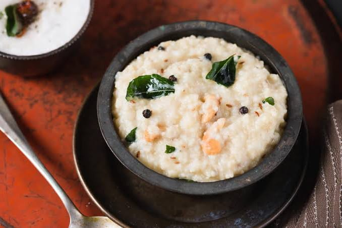
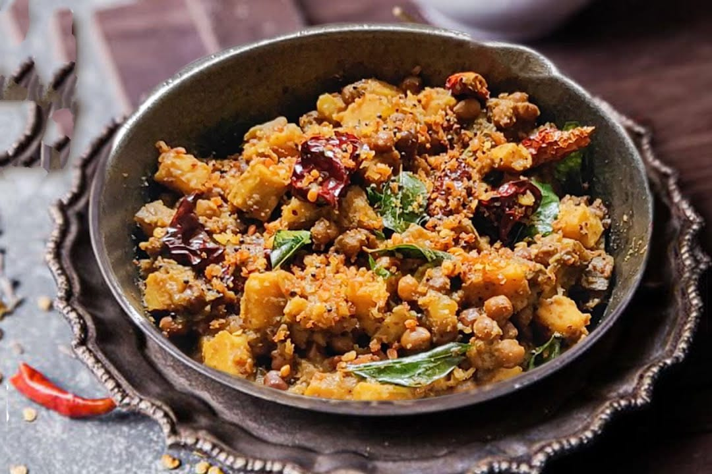
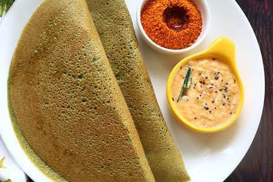

Our Popular Recipes

Millet Pongal
Nutritious twist on traditional pongal, made with millets, moong dal, and spices, served with ghee for a wholesome meal.

Kootu Curry
Flavorful South Indian curry with mixed vegetables, chickpeas, and coconut gravy, enjoyed as a side dish for its rich taste and nutrition.

Pesarattu
Crispy dosa made from green gram and rice batter, served with ginger chutney, known for its nutty flavor and high protein.

Ragi Nachos
A nutritious twist on traditional nachos,
using ragi chips for a guilt-free snack.